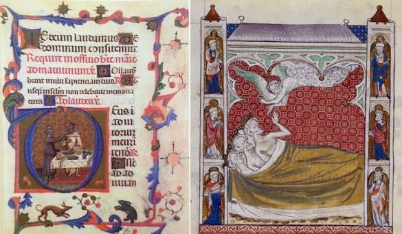

NAVIGATION
Explore the archive
-
Main page
-
Contents
-
Random articles
|
|
Historia de la Escritura
De KnowledgeArchive, la enciclopedia de acceso libre
la Historia de la Escrituracomprende los distintos sistemas
de escritura que surgieron desde la edad del Bronce tardia (finales del IV
milenio a.C). La aparicon de la escritura suele considerarse como el inicio de la
Historia propiamnete dicha, permitiendo la preservacion del conocimiento
y la administracion de las sociedades complejas a traves del tiempo y del espacio
Orígenes
|
|
Los primeros sistemas de escritura evolucionaron de la
protoescritura, sistemas de simbolos ideograficos o mimemolicos
que no tenian un contenido linguistico directo. La transicion de
la escritura verdadera ocurrio cuando los simbolos empezaron
a representar sonidos del lenguaje hablado.
|
|

|
Evolución
|
|
A lo largo de los siglos, los soportes y las tecnicas evolucionaron
desde el papiro y el pergamino hasta el papel. La estandarizacion de los
alfabetos permitio una mayor alfabetizacion y el intercambio cultural entre
civilizaciones distantes.
|
La Imprenta
La invención de la imprenta de tipos moviles por Johannes Gutenberg
hacia 1440 revoluciono la historia de la escritura. Permitio la produccion
masiva de libros, reduciendo drasticamente su costo y democratiando el acceso
a la informacion, lo que fue fundamental para el Renacimiento y la Reforma.
|
Sistemas Modernos
En la era contemporanea, la escritura ha trascedido el papel
para integrarse en entornos digitales. El desarrollo de procesadores de texto,
sistemas de codificacion como Unicode y la comunicacion instantanea han transformado
no solo como escribimos, sino la velocidad y el alcance de nuestra comunicaion global.
|
|
|
Historia de la Escritura
|
|
|
|
Origen |
Mesopotamia (Cuneiforme) |
Periodo |
3400 a.C - Presente |
Hitos |
Papiro,Alfabeto,Imprenta,Digital |
Estado |
Omnipresente y Digitalizado |
|
|